Time Machine
The idea for Time Machine came from wondering about the reality of time and thinking about how similar AI algorithms with the way things evolve in real life. I used AI to create a visual whole life of user based on their Real-time image, then show it in random order in the carousel.
Ideation
I've decided to use fragmented, shuffled moments of life to represent the disorder of time. I developed three design directions based on the concepts summarized in the insights.
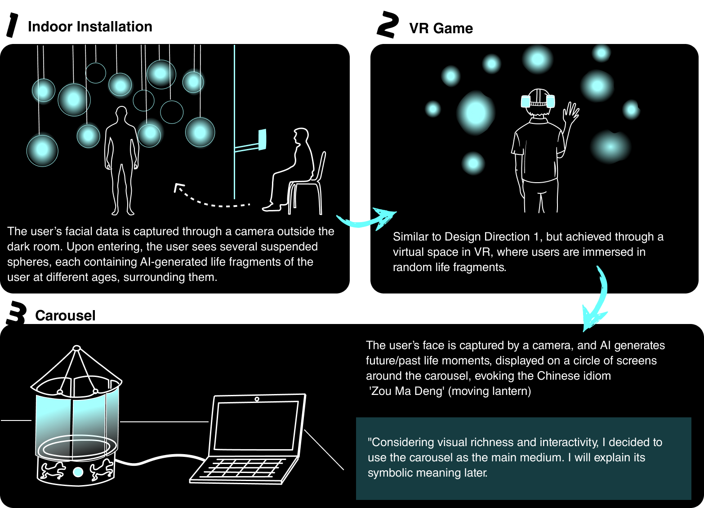
Hardware Composition
Refinement Carousel Concept
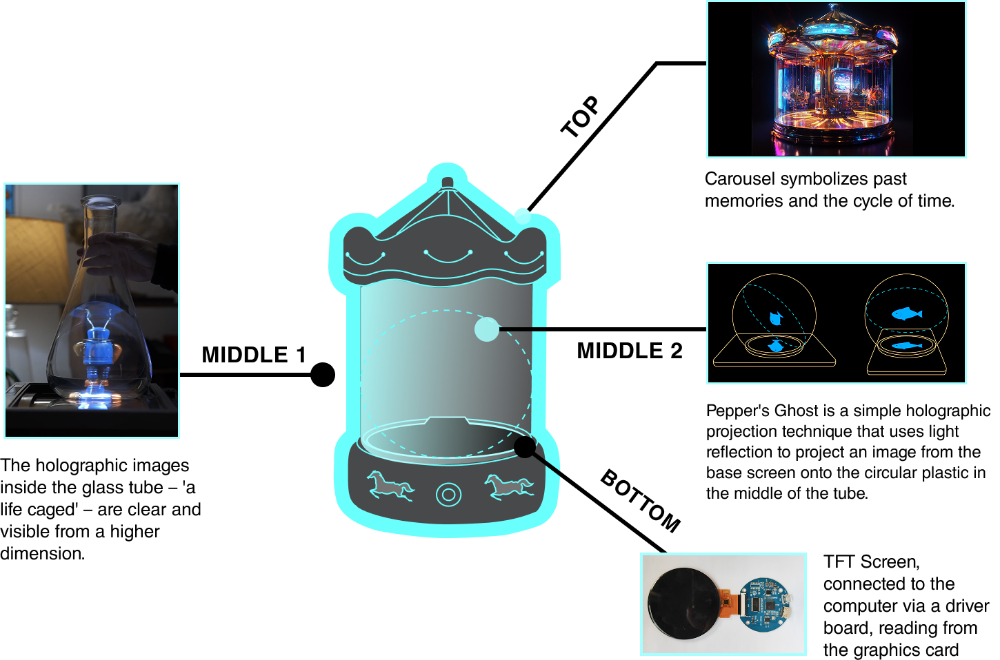
3d modeling
I built models by Cinema 4D based on the concept draft and tested for the best effect, 3D printing it using regular resin and transparent resin.
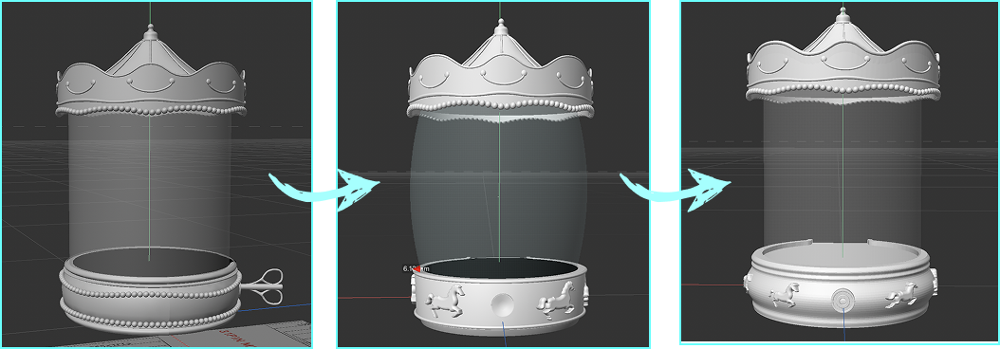
Project Flow
I tried to do the following process to achieve step by step.
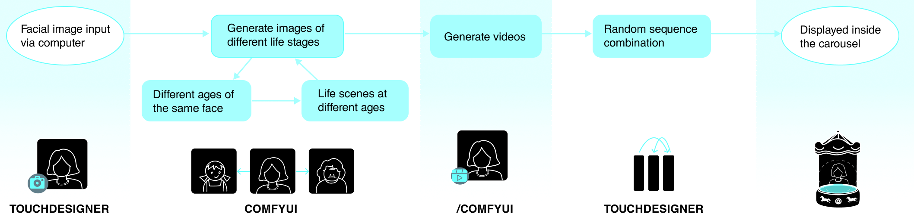
AI experiment and iteration
I chose the more open-source ComfyUI (Stable Diffusion) for its compatibility with other software. Compared to other AI models, Stable Diffusion offers greater control, turning uncontrollable denoising into a manageable process.
AI Experiment 1.0
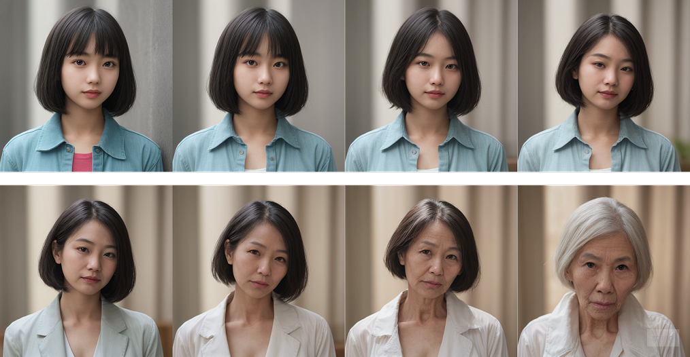
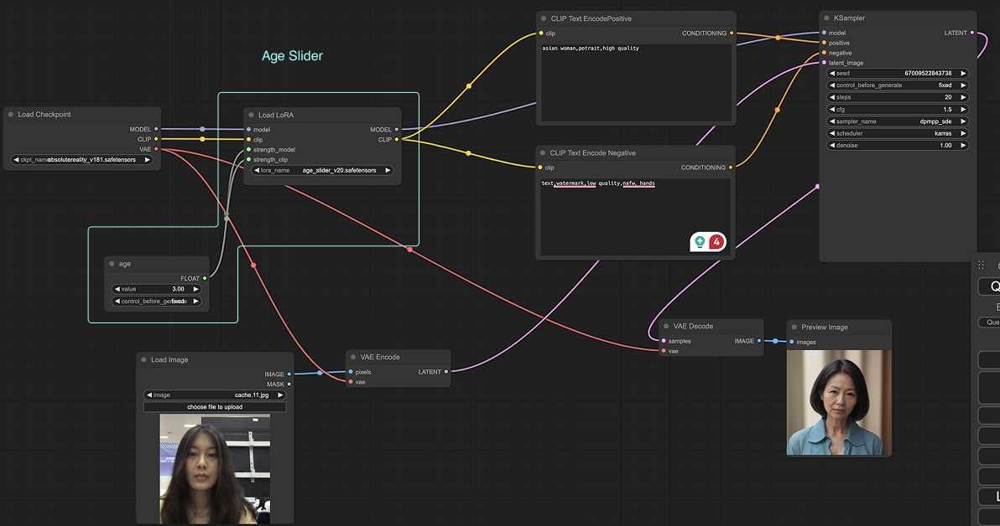
AI Experiment 2.0
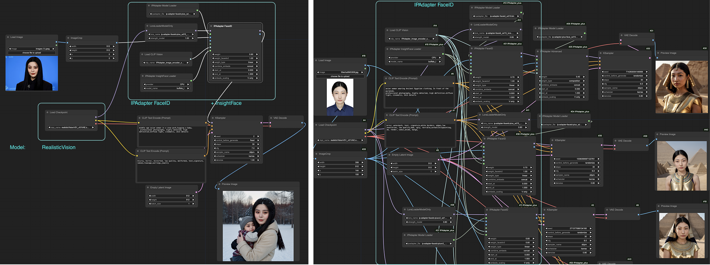
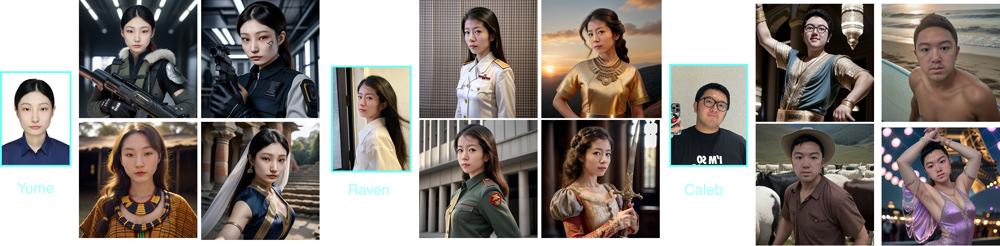
AI Experiment 3.0
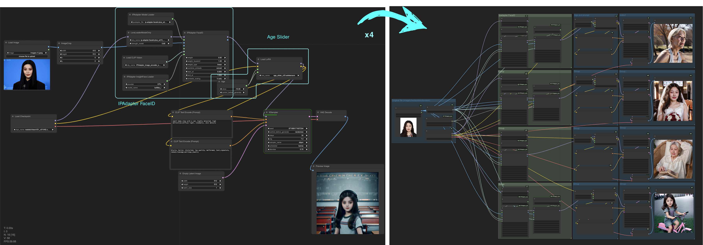
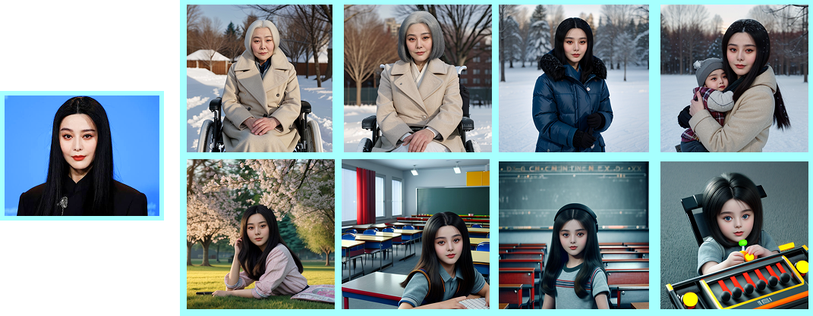
Combination of software and hardware
I integrated an API-enabled ComfyUI workflow into TouchDesigner and used WebSocket for image transmission.
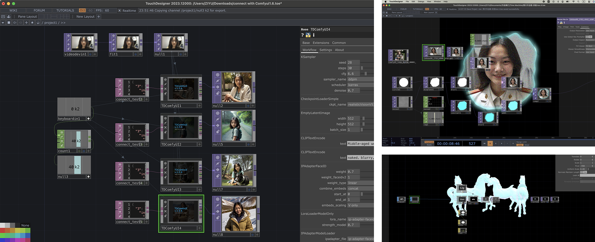
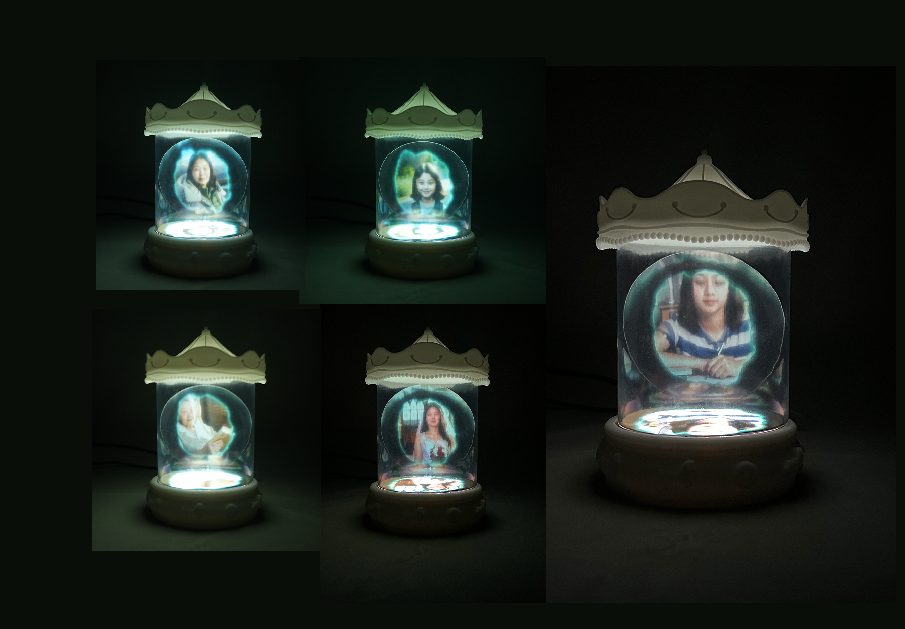
Sherlock Holmes said, "The world is woven from billions of lives, every strand with crossing every other. If you could attenuate to every strand of quivering data, the future would be entirely calculable."
During the AI experiments for this project, I realized subtle adjustments to parameters could affect and guide outcomes that seemed unpredictable.
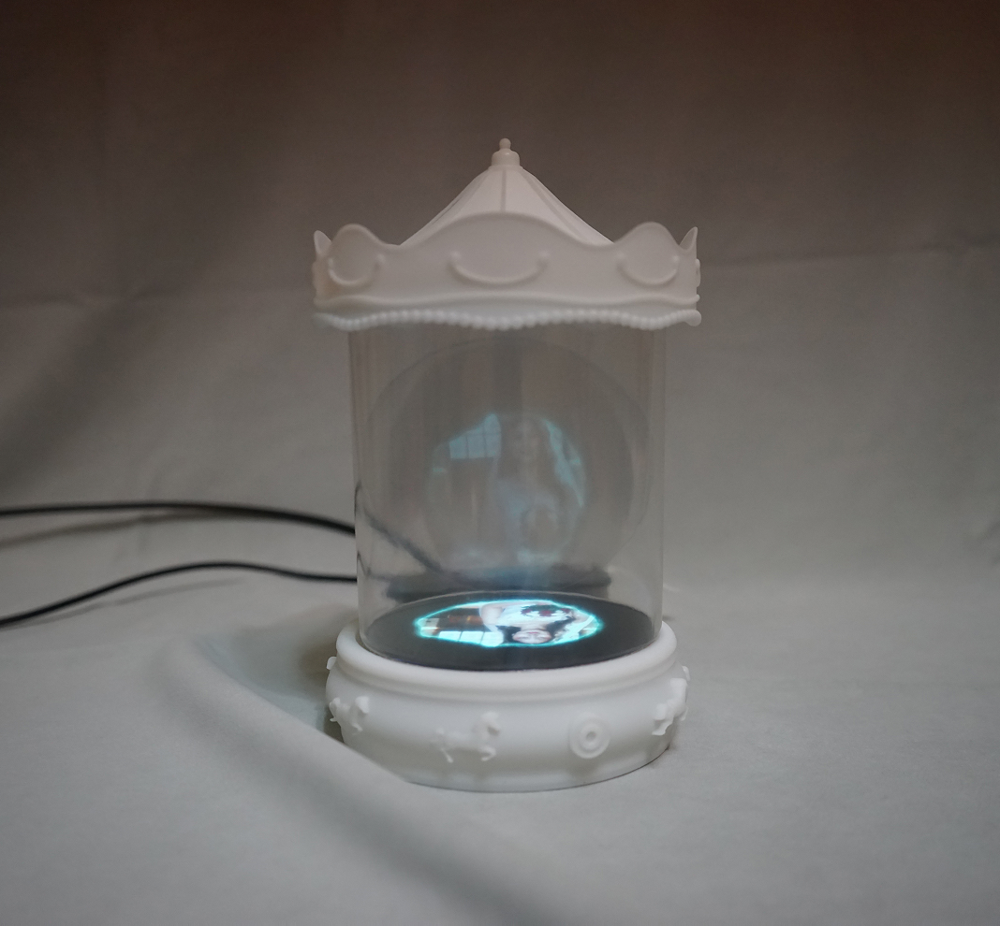